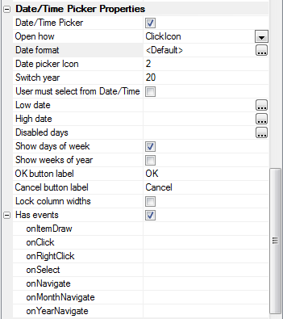
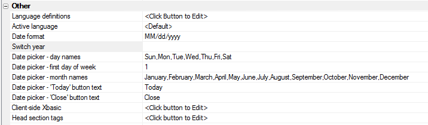

Grid and Dialog Component - Date Picker
The Date Picker in V11 has been completely rewritten and it has some very powerful new features. The new features include:- Can be configured as a date, date/time, or time picker by setting the Date format string.
- Client-side Event mode allowing first and last date shown in the Date Picker to be dynamically computed using Javascript functions
- Can be configured to disable certain days of the week. For example, can disable dates on Saturdays and Sundays
To turn a date picker into a date/time picker, simply define a date format that includes a time portion.
This is the Date/Time Picker properties grid for a control as it appears in the Dialog:

Additional settings, including localization properties, are found in the Other Properties for the Dialog and Grid. This image is from the Dialog.

These videos give a tour of the new features and show how the picker appears with various settings:
Watch Video - Part 1
Watch Video - Part 2
Watch Video - Part 3